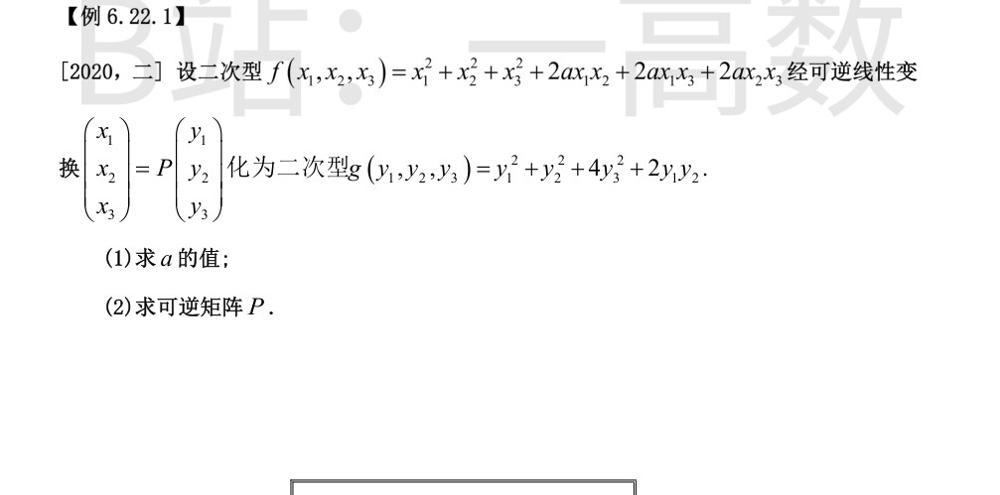
f 与 g 的矩阵分别为
$$A=\begin{pmatrix}1&a&a\\ a&1&a\\ a&a&1\end{pmatrix},\qquad C=\begin{pmatrix}1&1&0\\ 1&1&0\\ 0&0&4\end{pmatrix}.$$
经可逆线性变换 $x=Py$ 把 $f$ 化为 $g$，即 $C=P^{T}AP$，故 $A\simeq C$（合同），从而 $r(A)=r(C)$ 且正、负惯性指数相同。
求 $C$ 的特征值：$C(1,1,0)^{T}=2(1,1,0)^{T}$，$C(0,0,1)^{T}=4(0,0,1)^{T}$，$C(1,-1,0)^{T}=0$，故特征值为 $2,\,4,\,0$，$r(C)=2$，正惯性指数为 $2$。
由 $|A|=(1+2a)(1-a)^{2}=0$ 得 $a=-\tfrac12$ 或 $a=1$：
- $a=1$：$A$ 的特征值为 $3,0,0$，秩为 $1$，不合；
- $a=-\tfrac12$：$A$ 的特征值为 $\tfrac32,\tfrac32,0$，秩为 $2$、正惯性指数 $2$，符合。
故 $a=-\dfrac12$。
$a=-\tfrac12$ 时 $f=x_1^2+x_2^2+x_3^2-x_1x_2-x_1x_3-x_2x_3$。取
$$p_1=\frac{1}{\sqrt3}(1,-1,0)^{T},\quad p_2=\frac{1}{\sqrt3}(2,0,1)^{T},\quad p_3=(1,1,-1)^{T},$$
直接验证（$Ap_3=(1,1,-2)^{T}$，且 $A$ 在 $p_1,p_2$ 上的作用相当于数乘）：
$$p_1^{T}Ap_1=1,\quad p_1^{T}Ap_2=1,\quad p_2^{T}Ap_2=1,\quad p_3^{T}Ap_3=4,\quad p_1^{T}Ap_3=p_2^{T}Ap_3=0.$$
故 $P=(p_1,p_2,p_3)=\dfrac{1}{\sqrt3}\begin{pmatrix}1&2&\sqrt3\\ -1&0&\sqrt3\\ 0&1&-\sqrt3\end{pmatrix}$ 满足
$$P^{T}AP=\begin{pmatrix}1&1&0\\ 1&1&0\\ 0&0&4\end{pmatrix}=C,$$
即 $x=Py$ 时 $f=g$，且 $|P|=-\tfrac43\neq0$（可逆）。（答案不唯一，验证 $P^{T}AP=C$ 即可。）
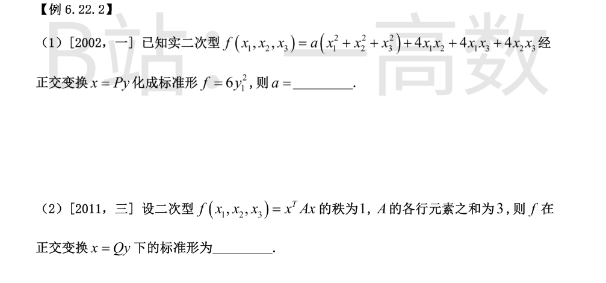
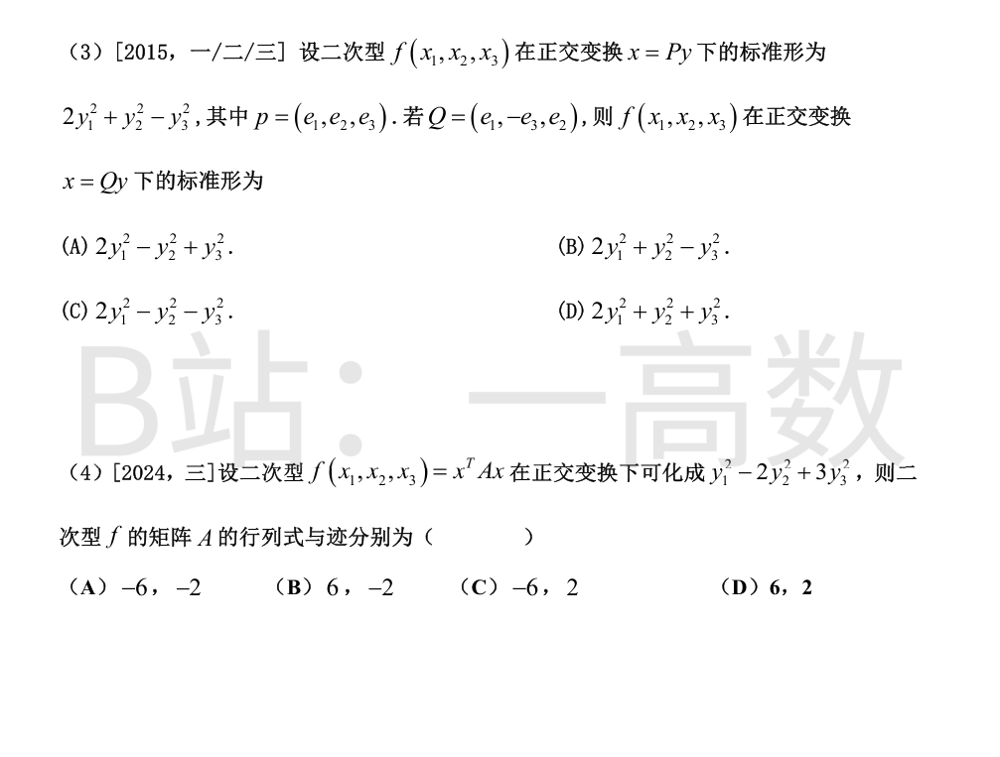
$A=\begin{pmatrix}a&2&2\\ 2&a&2\\ 2&2&a\end{pmatrix}=(a-2)E+2J$（$J$ 为全 1 矩阵），$J$ 的特征值为 $3,0,0$，故 $A$ 的特征值为
$$a+4,\quad a-2,\quad a-2.$$
正交变换不改变特征值，标准形为 $6y_1^2$ 说明特征值为 $\{6,0,0\}$，故 $a+4=6$ 且 $a-2=0$，得 $a=2$。
各行元素之和为 3 $\Rightarrow A(1,1,1)^{T}=3(1,1,1)^{T}$，即 $\lambda=3$ 是 $A$ 的特征值（特征向量 $(1,1,1)^{T}$）。
$A$ 实对称且 $r(A)=1$，故特征值为 $\lambda,0,0$，其中唯一的非零特征值就是 $3$。
故标准形为 $3y_1^2$。
$P$ 的列为单位正交向量且 $P^{T}AP=\mathrm{diag}(2,1,-1)$，故
$$Ae_1=2e_1,\quad Ae_2=e_2,\quad Ae_3=-e_3.$$
$Q=(e_1,-e_3,e_2)$ 的列仍两两正交单位，故
$$Q^{T}AQ=\begin{pmatrix}2&0&0\\ 0&-1&0\\ 0&0&1\end{pmatrix},$$
即 $x=Qy$ 下的标准形为 $2y_1^2-y_2^2+y_3^2$。选 (A)。
正交变换下标准形的系数即 $A$ 的特征值：$\lambda_1=1,\lambda_2=-2,\lambda_3=3$。
故 $|A|=\lambda_1\lambda_2\lambda_3=1\times(-2)\times3=-6$，$\mathrm{tr}A=1+(-2)+3=2$。选 (C)。
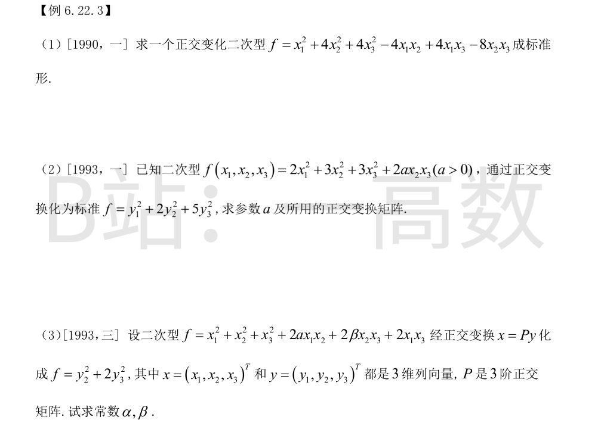
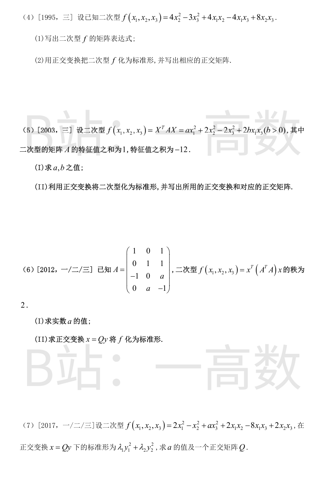
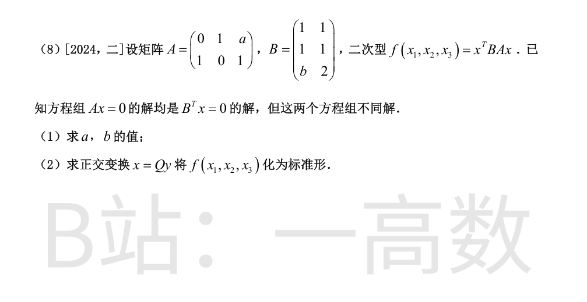
$$A=\begin{pmatrix}1&-2&2\\ -2&4&-4\\ 2&-4&4\end{pmatrix}=vv^{T},\qquad v=(1,-2,2)^{T},$$
故 $r(A)=1$，特征值为 $0,0,|v|^2=9$。
- $\lambda=9$：特征向量 $v$，单位化 $\xi_1=\tfrac13(1,-2,2)^{T}$；
- $\lambda=0$：$vx=0$ 即 $x_1-2x_2+2x_3=0$，取正交单位向量 $\xi_2=\tfrac{1}{\sqrt5}(2,1,0)^{T}$，$\xi_3=\tfrac{1}{3\sqrt5}(-2,4,5)^{T}$。
令 $Q=(\xi_1,\xi_2,\xi_3)$（正交阵），$x=Qy$ 得
$$f=9y_1^2.$$
（经数值验证 $Q^{T}AQ=\mathrm{diag}(9,0,0)$。）
$A=\begin{pmatrix}2&0&0\\ 0&3&a\\ 0&a&3\end{pmatrix}$ 的特征值为 $2,\ 3+a,\ 3-a$。
标准形 $y_1^2+2y_2^2+5y_3^2$ 的系数 $\{1,2,5\}$ 即全部特征值，其中已有 $2$，故 $\{3+a,3-a\}=\{5,1\}$，得 $a=2$（$a>0$）。
求特征向量（按 $\lambda=1,2,5$ 排序）：
- $\lambda=1$：$(A-E)x=0$ 得 $(0,1,-1)^{T}$，单位化 $\tfrac{1}{\sqrt2}(0,1,-1)^{T}$；
- $\lambda=2$：$(A-2E)x=0$ 得 $(1,0,0)^{T}$；
- $\lambda=5$：$(A-5E)x=0$ 得 $(0,1,1)^{T}$，单位化 $\tfrac{1}{\sqrt2}(0,1,1)^{T}$。
$$Q=\begin{pmatrix}0&1&0\\ \tfrac{1}{\sqrt2}&0&\tfrac{1}{\sqrt2}\\ -\tfrac{1}{\sqrt2}&0&\tfrac{1}{\sqrt2}\end{pmatrix},\qquad x=Qy:\quad f=y_1^2+2y_2^2+5y_3^2.$$
（已验证 $Q^{T}AQ=\mathrm{diag}(1,2,5)$。）
$A=\begin{pmatrix}1&\alpha&1\\ \alpha&1&\beta\\ 1&\beta&1\end{pmatrix}$，标准形 $y_2^2+2y_3^2$ 说明特征值为 $\{0,\,1,\,2\}$。
由 $|A|=0$：$|A|=2\alpha\beta-\alpha^2-\beta^2=-(\alpha-\beta)^2=0$，得 $\alpha=\beta$。
特征值两两乘积之和等于所有 2 阶主子式之和：
$$(1-\alpha^2)+0+(1-\beta^2)=0\cdot1+1\cdot2+2\cdot0=2\ \Rightarrow\ 2-2\alpha^2=2\ \Rightarrow\ \alpha=0.$$
故 $\alpha=\beta=0$。此时 $A=\begin{pmatrix}1&0&1\\ 0&1&0\\ 1&0&1\end{pmatrix}$，特征值恰为 $0,1,2$，与标准形吻合。
(i) 交叉项系数减半放对称位置：
$$A=\begin{pmatrix}0&2&-2\\ 2&4&4\\ -2&4&-3\end{pmatrix}.$$
(ii) 特征多项式
$$|A-\lambda E|=-(\lambda-1)(\lambda-6)(\lambda+6),$$
特征值 $\lambda=6,\,1,\,-6$。
- $\lambda=6$：$(A-6E)x=0\Rightarrow(1,5,2)^{T}$，单位化 $\tfrac{1}{\sqrt{30}}(1,5,2)^{T}$；
- $\lambda=1$：$(A-E)x=0\Rightarrow(-2,0,1)^{T}$，单位化 $\tfrac{1}{\sqrt5}(-2,0,1)^{T}$；
- $\lambda=-6$：$(A+6E)x=0\Rightarrow(1,-1,2)^{T}$，单位化 $\tfrac{1}{\sqrt6}(1,-1,2)^{T}$。
三个特征向量属于不同特征值，两两正交（已验证）。令 $Q$ 为上述单位向量按序排成的矩阵，$x=Qy$：
$$f=6y_1^2+y_2^2-6y_3^2.$$
（已数值验证 $Q^{T}AQ=\mathrm{diag}(6,1,-6)$。）
(I) $A=\begin{pmatrix}a&0&b\\ 0&2&0\\ b&0&-2\end{pmatrix}$。
特征值之和 $=\mathrm{tr}A=a+2-2=a=1$；特征值之积 $=|A|=2(-2a-b^2)=-12$，代入 $a=1$：$-4-2b^2=-12\Rightarrow b^2=4$，又 $b>0$，得 $b=2$。
(II) $A=\begin{pmatrix}1&0&2\\ 0&2&0\\ 2&0&-2\end{pmatrix}$：分块看，$x_2$ 方向特征值 $2$；$\begin{pmatrix}1&2\\ 2&-2\end{pmatrix}$ 的特征方程 $\lambda^2+\lambda-6=0$ 得 $\lambda=2,-3$。故特征值 $2,2,-3$（和 $1$、积 $-12$ ✓）。
- $\lambda=2$（二重）：$(A-2E)x=0$ 即 $-x_1+2x_3=0$，取正交单位 $\xi_1=\tfrac{1}{\sqrt5}(2,0,1)^{T},\ \xi_2=(0,1,0)^{T}$；
- $\lambda=-3$：$(A+3E)x=0\Rightarrow(-1,0,2)^{T}$，单位化 $\xi_3=\tfrac{1}{\sqrt5}(-1,0,2)^{T}$。
$x=Qy=(\xi_1,\xi_2,\xi_3)y$：
$$f=2y_1^2+2y_2^2-3y_3^2.$$
（已数值验证。）
(I) $r\big((A^{T}A)\big)=r(A)=2$，故 $|A|=0$。$|A|=a+1=0$，得 $a=-1$。
(II) $A=\begin{pmatrix}1&0&1\\ 0&1&1\\ -1&0&-1\end{pmatrix}$，
$$A^{T}A=\begin{pmatrix}2&0&2\\ 0&1&1\\ 2&1&3\end{pmatrix}\quad(\text{即 } f=2(x_1+x_3)^2+(x_2+x_3)^2\text{ 的矩阵}).$$
特征多项式 $|\lambda E-A^{T}A|=\lambda(\lambda^2-6\lambda+6)$，特征值
$$\lambda_1=3+\sqrt3,\quad \lambda_2=3-\sqrt3,\quad \lambda_3=0.$$
特征向量（已正交化单位化，数值验证 $Q^{T}(A^{T}A)Q=\mathrm{diag}(3+\sqrt3,3-\sqrt3,0)$）：
- $\lambda_1=3+\sqrt3$：$\dfrac{1}{2\sqrt3}(2,\ \sqrt3-1,\ \sqrt3+1)^{T}$；
- $\lambda_2=3-\sqrt3$：$\dfrac{1}{2\sqrt3}(-2,\ \sqrt3+1,\ \sqrt3-1)^{T}$；
- $\lambda_3=0$：$\dfrac{1}{\sqrt3}(-1,-1,1)^{T}$。
令 $Q$ 为其按序排成的正交阵，$x=Qy$：
$$f=(3+\sqrt3)y_1^2+(3-\sqrt3)y_2^2.$$
标准形只含两个平方项，故 $r(A)=2$，$|A|=0$。由
$$A=\begin{pmatrix}2&1&-4\\ 1&-1&1\\ -4&1&a\end{pmatrix},\qquad |A|=-3a+6=0\ \Rightarrow\ a=2.$$
$a=2$ 时：$\mathrm{tr}A=3$，所有 2 阶主子式之和 $=-3-12-3=-18$，$|A|=0$，故特征值满足 $\lambda^2-3\lambda-18=0$（非零部分）与 $0$，即
$$\lambda_1=6,\quad \lambda_2=-3,\quad \lambda_3=0.$$
特征向量：
- $\lambda=6$：$(1,0,-1)^{T}$，单位化 $\tfrac{1}{\sqrt2}(1,0,-1)^{T}$；
- $\lambda=-3$：$(1,-1,1)^{T}$，单位化 $\tfrac{1}{\sqrt3}(1,-1,1)^{T}$；
- $\lambda=0$：$(1,2,1)^{T}$，单位化 $\tfrac{1}{\sqrt6}(1,2,1)^{T}$。
三者两两正交（已验证）。$x=Qy$：
$$f=6y_1^2-3y_2^2.$$
（已数值验证 $Q^{T}AQ=\mathrm{diag}(6,-3,0)$。）
(1) $r(A)=2$，$Ax=0$ 的解空间为 $V_1=\mathrm{span}\{(-1,-a,1)^{T}\}$（由 $x_2+ax_3=0,\ x_1+x_3=0$）。$B^{T}x=0$ 即
$$x_1+x_2+bx_3=0,\qquad x_1+x_2+2x_3=0.$$
若 $b\neq2$，则 $x_3=0,\ x_1=-x_2$，解空间不含 $(-1,-a,1)^{T}$ 方向，与"均是解"矛盾；故 $b=2$。此时 $B^{T}x=0$ 等价于 $x_1+x_2+2x_3=0$，解空间 2 维，代入 $(-1,-a,1)^{T}$：$-1-a+2=0$，得 $a=1$。此时 $V_1$ 为 1 维、后者 2 维，两解空间不同 ✓。
(2) $a=1,b=2$ 时
$$BA=\begin{pmatrix}1&1\\ 1&1\\ 2&2\end{pmatrix}\begin{pmatrix}0&1&1\\ 1&0&1\end{pmatrix}=\begin{pmatrix}1&1&2\\ 1&1&2\\ 2&2&4\end{pmatrix}\quad(\text{对称}).$$
$f=x^{T}(BA)x$ 的矩阵即 $BA$（已对称）。$r(BA)=1$，特征值为 $0,0,\mathrm{tr}=6$。
- $\lambda=6$：$(1,1,2)^{T}$，单位化 $\tfrac{1}{\sqrt6}(1,1,2)^{T}$；
- $\lambda=0$：$x_1+x_2+2x_3=0$，取 $\tfrac{1}{\sqrt2}(1,-1,0)^{T}$ 与 $\tfrac{1}{\sqrt3}(1,1,-1)^{T}$。
$x=Qy$：
$$f=6y_1^2.$$
（已数值验证 $Q^{T}(BA)Q=\mathrm{diag}(6,0,0)$。）
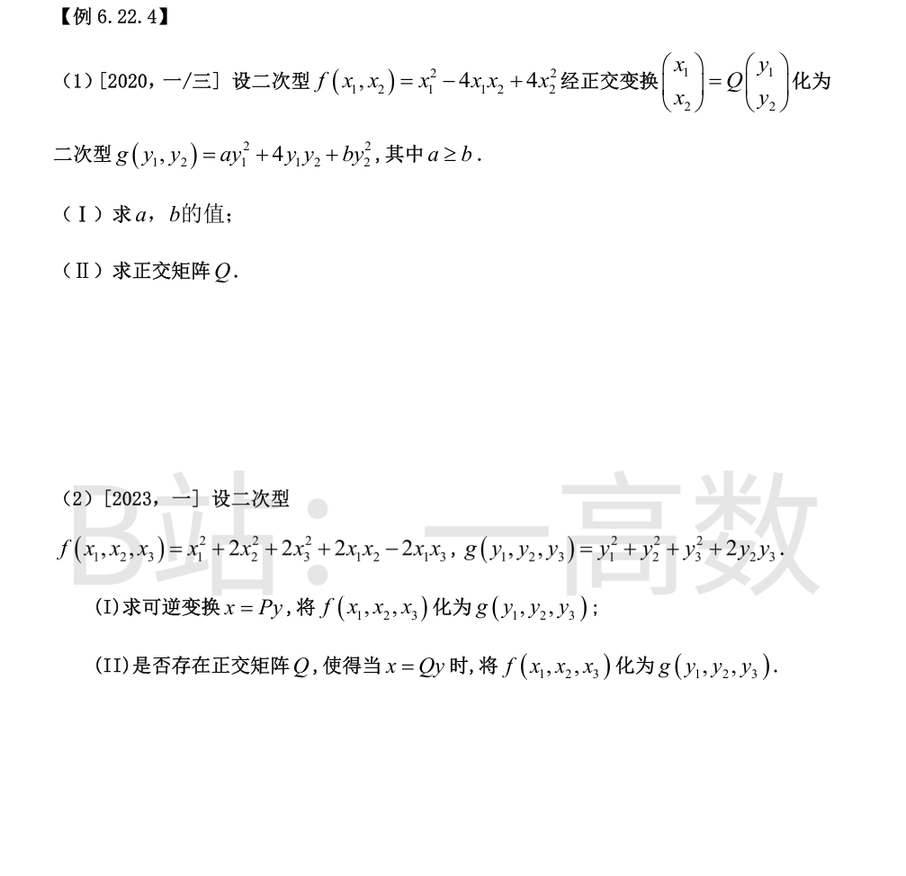
(I) $f$ 的矩阵 $A=\begin{pmatrix}1&-2\\ -2&4\end{pmatrix}$，$g$ 的矩阵 $C=\begin{pmatrix}a&2\\ 2&b\end{pmatrix}$。正交变换下 $Q^{T}AQ=C$，$A\sim C$，特征值相同。
$A$：$\lambda^2-5\lambda=0$，$\lambda=5,0$。$C$：$\mathrm{tr}C=a+b=5$，$|C|=ab-4=0$，故 $\{a,b\}=\{4,1\}$；又 $a\ge b$，得 $a=4,\ b=1$。
(II) $A=SDS^{T}$，$D=\mathrm{diag}(5,0)$，$S$ 的列：$\lambda=5$ 的 $\tfrac{1}{\sqrt5}(1,-2)^{T}$，$\lambda=0$ 的 $\tfrac{1}{\sqrt5}(2,1)^{T}$；
$C=TDT^{T}$，$T$ 的列：$\lambda=5$ 的 $\tfrac{1}{\sqrt5}(2,1)^{T}$，$\lambda=0$ 的 $\tfrac{1}{\sqrt5}(1,-2)^{T}$。
令 $Q=ST^{T}$：
$$Q=\frac15\begin{pmatrix}4&-3\\ -3&-4\end{pmatrix},$$
验证 $Q^{T}AQ=\begin{pmatrix}4&2\\ 2&1\end{pmatrix}=C$，即 $x=Qy$ 时 $f=g=4y_1^2+4y_1y_2+y_2^2$。（已数值验证。）
(I) 配方：
$$f=(x_1+x_2-x_3)^2+(x_2+x_3)^2,\qquad g=y_1^2+(y_2+y_3)^2.$$
令 $y_1=x_1+x_2-x_3,\ y_2=x_2,\ y_3=x_3$，即
$$x=Py,\qquad P=\begin{pmatrix}1&-1&1\\ 0&1&0\\ 0&0&1\end{pmatrix}\quad(|P|=1\neq0),$$
则 $f(P\,y)=y_1^2+(y_2+y_3)^2=g(y)$。（已数值验证 $P^{T}AP=$ $g$ 的矩阵。）
(II) $f$ 的矩阵 $A=\begin{pmatrix}1&1&-1\\ 1&2&0\\ -1&0&2\end{pmatrix}$，特征多项式 $(2-\lambda)\lambda(\lambda-3)$，特征值为 $3,2,0$；$g$ 的矩阵 $C=\begin{pmatrix}1&0&0\\ 0&1&1\\ 0&1&1\end{pmatrix}$ 的特征值为 $2,1,0$。
若存在正交 $Q$ 使 $Q^{T}AQ=C$，则 $A\sim C$，特征值必须相同，但 $\{3,2,0\}\neq\{2,1,0\}$，故不存在这样的正交矩阵。
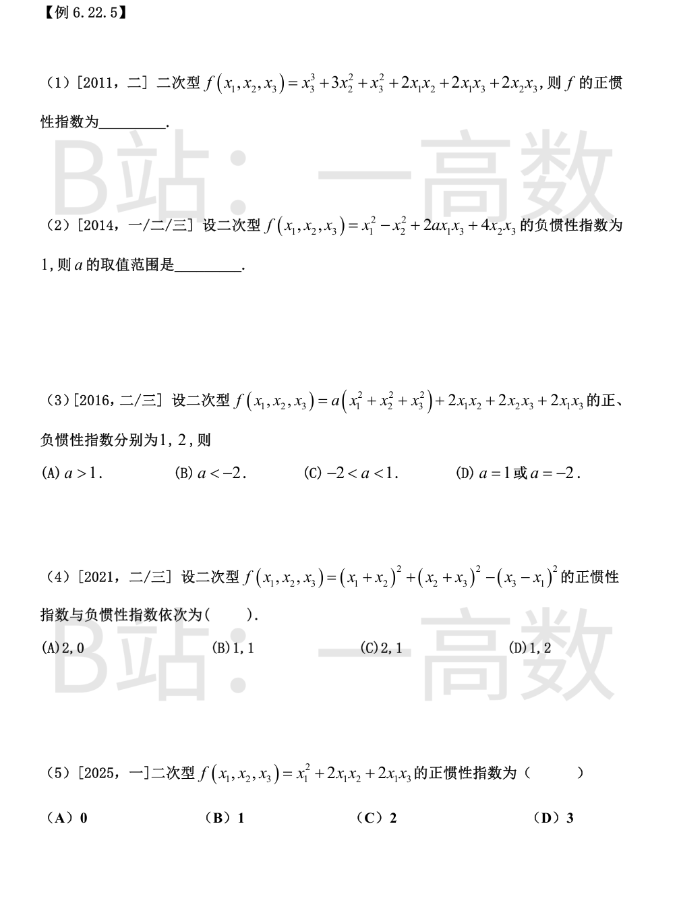
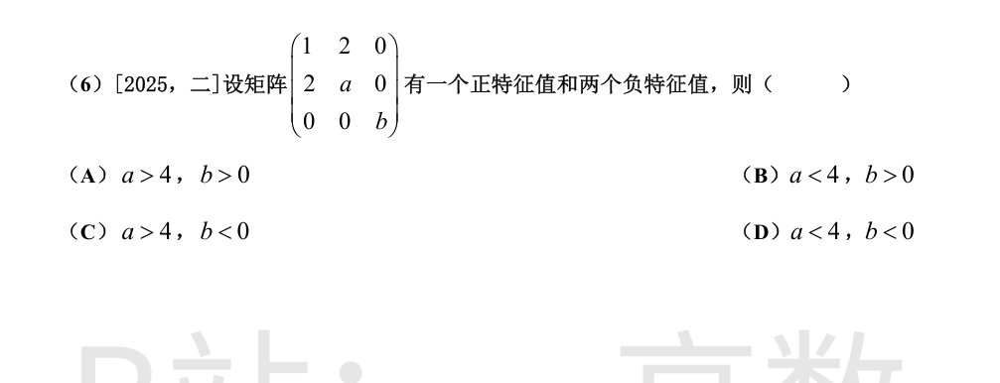
配方：$f=(x_1+x_2+x_3)^2+2x_2^2$。
两个系数为正的独立平方项，故正惯性指数为 $2$。
$A=\begin{pmatrix}1&0&a\\ 0&-1&2\\ a&2&0\end{pmatrix}$。2 阶主子式 $\begin{vmatrix}1&0\\ 0&-1\end{vmatrix}=-1<0$，由特征值插空，$A$ 必有至少一个正特征值与至少一个负特征值。
又 $|A|=a^2-4$：
- $|A|>0$（$a^2>4$）：一正两负，负惯性指数为 $2$；
- $|A|\le0$（$a^2\le4$）：恰一个负特征值（$|A|=0$ 时第三个特征值为 $0$），负惯性指数为 $1$。
故 $-2\le a\le2$。（已对 $a=-2,-1.9,0,1.9,2,2.1,-2.1$ 数值验证。）
$A=\begin{pmatrix}a&1&1\\ 1&a&1\\ 1&1&a\end{pmatrix}$：每行和为 $a+2$，故 $\lambda_1=a+2$（特征向量 $(1,1,1)^{T}$）；其余特征值为 $a-1$（二重）。
一正两负 $\Leftrightarrow a+2>0$ 且 $a-1<0$（且均非零）$\Leftrightarrow -2<a<1$。选 (C)。
展开：$f=2x_2^2+2x_1x_2+2x_2x_3+2x_1x_3$，矩阵
$$A=\begin{pmatrix}0&1&1\\ 1&2&1\\ 1&1&0\end{pmatrix},\qquad |\lambda E-A|=-\lambda(\lambda-3)(\lambda+1),$$
特征值 $3,-1,0$，正、负惯性指数为 $1,1$。选 (B)。（已数值验证。）
配方：$f=(x_1+x_2+x_3)^2-(x_2+x_3)^2$。
一个正平方项、一个负平方项，秩为 2，正惯性指数为 $1$。选 (B)。（矩阵 $\begin{pmatrix}1&1&1\\ 1&0&0\\ 1&0&0\end{pmatrix}$ 特征值 $2,-1,0$，已数值验证。）
$A$ 的特征值 $=b$ 与 $\begin{pmatrix}1&2\\ 2&a\end{pmatrix}$ 的两个特征值之和，后两者之积为 $a-4$。
- $a<4$：2 阶块的两个特征值异号（积 $a-4<0$），一正一负；再取 $b<0$，共一正两负 ✓；
- $a>4$：2 阶块两个特征值同正（积正、和 $1+a>0$），至多只有 $b$ 一个负特征值，不合；
- $a=4$：2 阶块特征值为 $0,5$，至多一负，不合。
故 $a<4,\ b<0$，选 (D)。
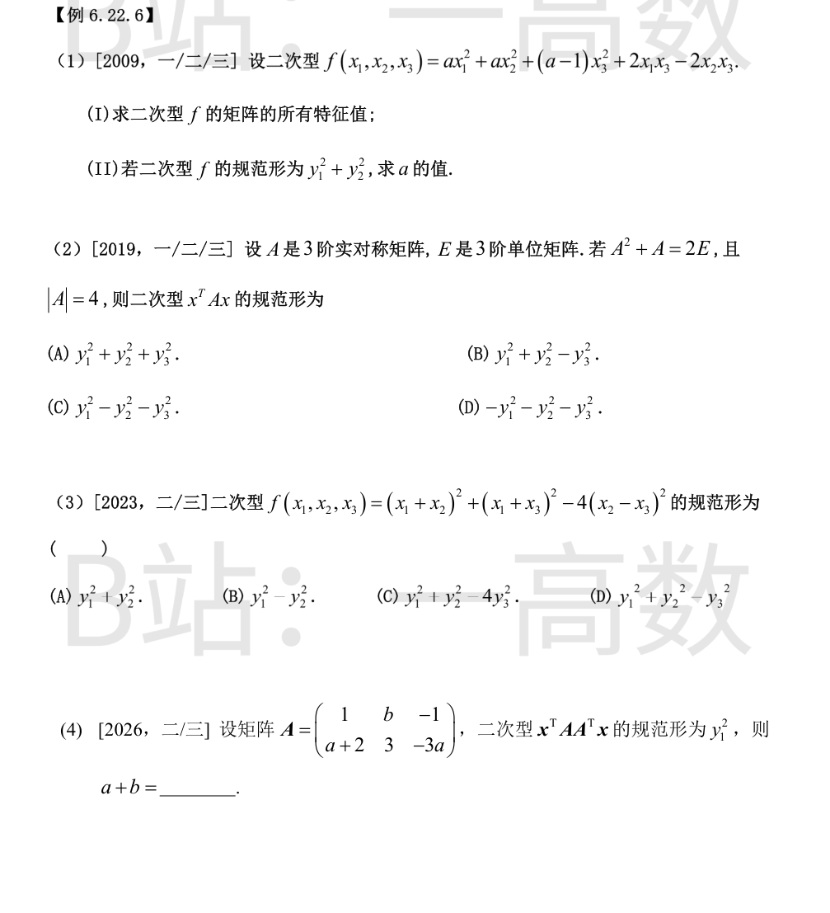
$$A=\begin{pmatrix}a&0&1\\ 0&a&-1\\ 1&-1&a-1\end{pmatrix}.$$
(I) $$|A-\lambda E|=(a-\lambda)\big[(a-\lambda)(a-1-\lambda)-2\big]=-(\lambda-a-1)(\lambda-a)(\lambda-a+2),$$
特征值为
$$\lambda_1=a+1,\quad \lambda_2=a,\quad \lambda_3=a-2.$$
(II) 规范形 $y_1^2+y_2^2$：秩为 2、正惯性指数 2，即特征值恰有两个正、一个零：
- $a=2$：特征值 $3,2,0$ ✓；
- $a=0$：$1,0,-2$ ✗；$a=-1$：$0,-1,-3$ ✗；其余 $a$ 无零特征值 ✗。
故 $a=2$。（已对 $a=0,1,2,5$ 数值验证特征值集合 $\{a+1,a,a-2\}$。）
设 $\lambda$ 为 $A$ 的特征值，由 $A^2+A=2E$ 得 $\lambda^2+\lambda-2=0$，$\lambda=1$ 或 $\lambda=-2$。
$|A|=\lambda_1\lambda_2\lambda_3=4=1\cdot(-2)^2\cdot 1^0$，只能两个 $-2$、一个 $1$，即特征值为 $1,\,-2,\,-2$。
故规范形为 $y_1^2-y_2^2-y_3^2$，选 (C)。
注意 $(x_1,x_2,x_3)\mapsto(x_1+x_2,\ x_1+x_3,\ x_2-x_3)$ 不是可逆代换（系数行列式为 0），不能直接数平方项，须用惯性定理。
$f$ 的矩阵 $A=\begin{pmatrix}2&1&1\\ 1&-3&4\\ 1&4&-3\end{pmatrix}$：
$$|A|=0,\qquad \mathrm{tr}A=-4,\qquad \text{2 阶主子式之和}=-7-7-7=-21,$$
故特征值为 $0$ 与 $\lambda^2+4\lambda-21=0$ 的根，即 $3,\ -7,\ 0$。
正惯性指数 1、负惯性指数 1，规范形为 $y_1^2-y_2^2$，选 (B)。（已数值验证特征值 $3,-7,0$。）
$AA^{T}$ 半正定，其规范形为 $y_1^2$ 说明 $r(AA^{T})=r(A)=1$（正惯性指数 1、秩 1）。
故 $A$ 的两行成比例：$(a+2,\ 3,\ -3a)=k(1,\ b,\ -1)$。由第三分量 $-3a=-k$ 得 $k=3a$；由 $k=a+2$ 得 $3a=a+2$，$a=1$，$k=3$；再由 $3=kb$ 得 $b=1$。
故 $a+b=2$。
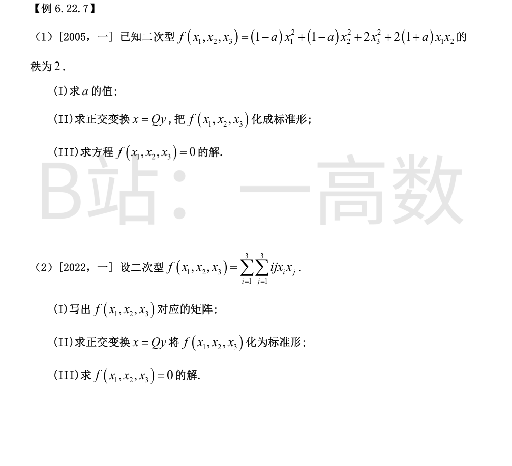
(I) $A=\begin{pmatrix}1-a&1+a&0\\ 1+a&1-a&0\\ 0&0&2\end{pmatrix}$，$|A|=2\big[(1-a)^2-(1+a)^2\big]=-8a$。秩为 2 $\Rightarrow|A|=0\Rightarrow a=0$。
(II) $a=0$：$A=\begin{pmatrix}1&1&0\\ 1&1&0\\ 0&0&2\end{pmatrix}$，特征值 $2,2,0$。
- $\lambda=2$：$(1,1,0)^{T},\ (0,0,1)^{T}$，单位化 $\tfrac{1}{\sqrt2}(1,1,0)^{T},\ (0,0,1)^{T}$；
- $\lambda=0$：$(1,-1,0)^{T}$，单位化 $\tfrac{1}{\sqrt2}(1,-1,0)^{T}$。
$Q=\begin{pmatrix}\tfrac{1}{\sqrt2}&0&\tfrac{1}{\sqrt2}\\ \tfrac{1}{\sqrt2}&0&-\tfrac{1}{\sqrt2}\\ 0&1&0\end{pmatrix}$，$x=Qy$：$f=2y_1^2+2y_2^2$。（已验证 $Q^{T}AQ=\mathrm{diag}(2,2,0)$。）
(III) $f=0\iff y_1=y_2=0$，此时 $x=y_3\cdot\tfrac{1}{\sqrt2}(1,-1,0)^{T}$，即
$$x=k\,(1,-1,0)^{T},\quad k\in\mathbb{R}.$$
（直接看也行：$f=(x_1+x_2)^2+2x_3^2=0\iff x_1=-x_2,\ x_3=0$。）
(I) $f=\sum_i\sum_j ij\,x_ix_j=\Big(\sum_i i x_i\Big)\Big(\sum_j j x_j\Big)=(x_1+2x_2+3x_3)^2$，故
$$A=aa^{T},\quad a=(1,2,3)^{T},\qquad A=\begin{pmatrix}1&2&3\\ 2&4&6\\ 3&6&9\end{pmatrix}.$$
(II) $r(A)=1$，特征值为 $0,0,\mathrm{tr}A=14$。
- $\lambda=14$：$a$ 方向，$\xi_1=\tfrac{1}{\sqrt{14}}(1,2,3)^{T}$；
- $\lambda=0$：$x_1+2x_2+3x_3=0$，取正交单位 $\xi_2=\tfrac{1}{\sqrt5}(2,-1,0)^{T},\ \xi_3=\tfrac{1}{\sqrt{70}}(3,6,-5)^{T}$。
$x=Qy=(\xi_1,\xi_2,\xi_3)y$：$f=14y_1^2$。（已验证正交性与 $Q^{T}AQ=\mathrm{diag}(14,0,0)$。）
(III) $f=0\iff y_1=0\iff x\perp(1,2,3)^{T}$，即 $x_1+2x_2+3x_3=0$，通解
$$x=s\,(-2,1,0)^{T}+t\,(-3,0,1)^{T},\quad s,t\in\mathbb{R}.$$
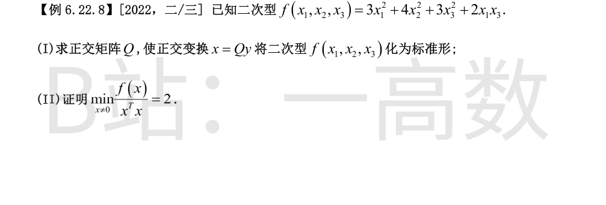
(I) $A=\begin{pmatrix}3&0&1\\ 0&4&0\\ 1&0&3\end{pmatrix}$：$x_2$ 方向给特征值 $4$，块 $\begin{pmatrix}3&1\\ 1&3\end{pmatrix}$ 给特征值 $4,2$，故特征值 $2,4,4$。
- $\lambda=2$：$(A-2E)x=0\Rightarrow(1,0,-1)^{T}$，单位化 $\tfrac{1}{\sqrt2}(1,0,-1)^{T}$；
- $\lambda=4$：$x_1=x_3$，取正交单位 $\tfrac{1}{\sqrt2}(1,0,1)^{T},\ (0,1,0)^{T}$。
$Q=\begin{pmatrix}\tfrac{1}{\sqrt2}&0&\tfrac{1}{\sqrt2}\\ 0&1&0\\ -\tfrac{1}{\sqrt2}&0&\tfrac{1}{\sqrt2}\end{pmatrix}$（列序对应 $2,4,4$），$x=Qy$：
$$f=2y_1^2+4y_2^2+4y_3^2.$$
（已数值验证 $Q^{T}AQ=\mathrm{diag}(2,4,4)$。）
(II) 因 $Q$ 正交，$x^{T}x=y^{T}y$，且
$$f=2y_1^2+4y_2^2+4y_3^2\ \ge\ 2(y_1^2+y_2^2+y_3^2)=2\,x^{T}x.$$
故对任意 $x\neq0$，$\dfrac{f(x)}{x^{T}x}\ge2$。取 $x=\dfrac{1}{\sqrt2}(1,0,-1)^{T}$（即 $y=(1,0,0)^{T}$）时 $f=2,\ x^{T}x=1$，比值恰为 $2$。故
$$\min_{x\neq0}\frac{f(x)}{x^{T}x}=2.$$